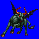
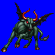
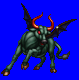
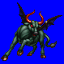

Height: ??? Weight: ???
Habitat: Special Origin: Middle East
Meaning: Unknown
The gorgon comes from the story of Medusa in Greek myth. The goddess Athena changed three beautiful sisters, Stheno, Elurya, and Medusa into monsters whose gazes could turn any mortal to stone. The blood of the gorgon is said to have miraculous powers, even allowing one to raise the dead. The Arabic interpretation on this idea was that the gorgon had similar abilities to Medusa, but a more monstrous shape as shown above.
See also: Medusa and Catoblepas